Nos encontramos en la siguiente situación;
Dentro de una organización con un equipo o unas credenciales de un usuario perteneciente al dominio pero sin privilegios y nuestra maquina kali.
Nuestro objetivo es recopilar información.
Para esto vamos a ver unos cuantos comandos y técnicas para recabar información a nivel local.
Para saber el usuario actual y el dominio:
$env:Username // whoami
$env:UserDomain
Nombre de equipo:
$env:ComputerName
En versiones antiguas de windows como se mencionó anteriormente cualquier usuario de dominio sin privilegios podía enumerar la SAM de un equipo remoto:
Get.NetLocalGroup -ComputerName WS02
Actualmente eso no es posible si el usuario del que tenemos control no es administrador del dominio.
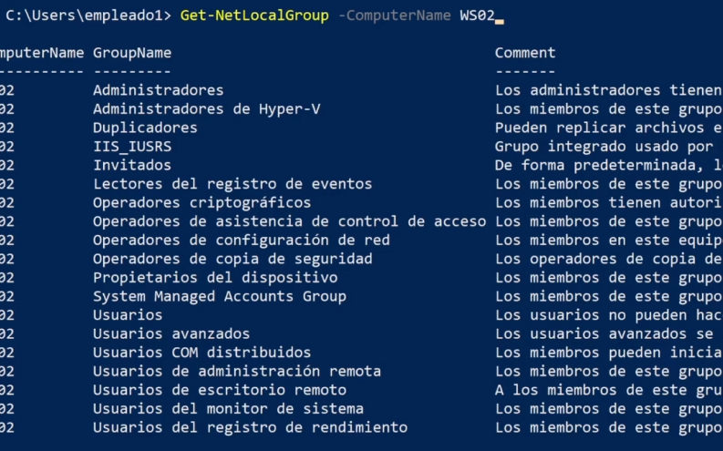
Si analizamos las peticiones que realiza la maquina mediante wireshark vemos lo siguiente:
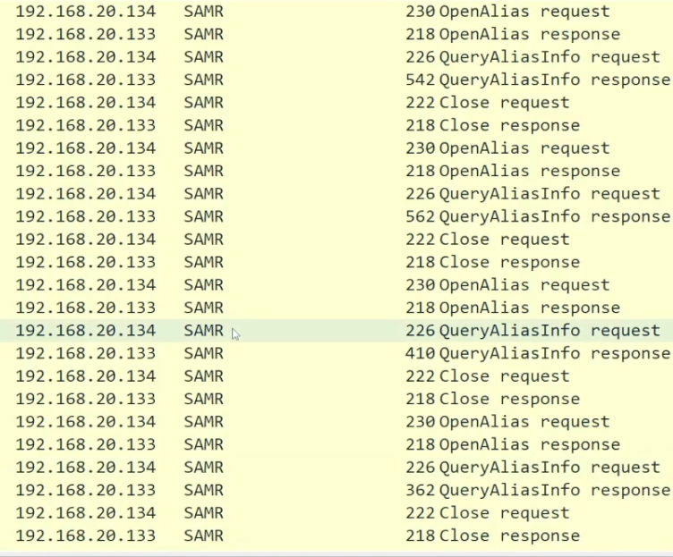
El tráfico pertenece al protocolo SAMR que va sobre DCE/RPC (Distributed computing enviroment / remote procedure call) y que es utilizado por windows para realizar peticiones a muchos de sus servicios de forma local y remota.
Esto es importante para saber en que situación se consulta la SAM y en que otras se consulta el NTDS.dit del domain controler
Cuando consultemos la base de datos del domain controles se utiliza el protocolo LDAPs.
Para realizar esto sin powerview:
Invoke-Command -ScriptBlock { Get-LocalGroupMember -Group Administradores } -ComputerName WS02
Si queremos saber que usuario se encuentra logueado en un sistema usamos con powerview:
Get-NetLoggedon
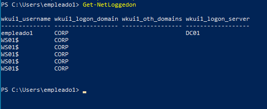
Como dato si somos administrador del dominio podemos acceder a los discos c de los equipos pertenecientes en la siguiente ruta:
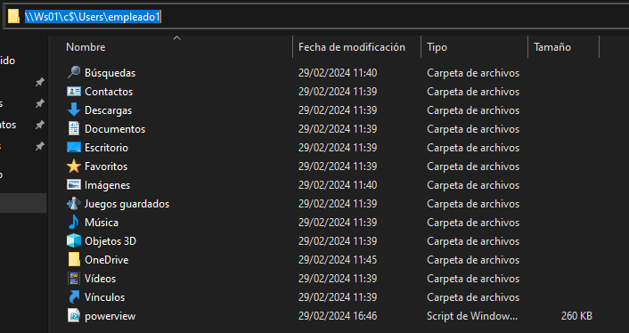
Lo que si podemos hacer es obtener las sesiones, las conexiones que se han establecido a la maquina que tenemos:
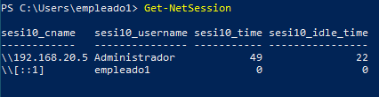
Y podemos saber que un administrador se ha conectado a nuestra maquina desde esa IP por lo que ya tenemos un potencial objetivo que si conseguimos vulnerar tendremos altas probabilidades de tener acceso administrativos.
Importante recalcar que aunque la conexión falle, por ejemplo si desde otro usuario sin privilegios intenta acceder a la carpeta compartida C$ este intento se registra igualmente:
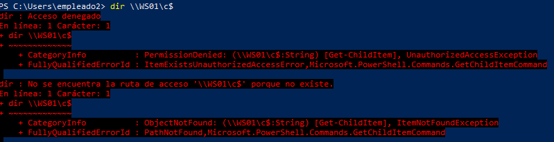
Vemos como igualmente aparece registrado:
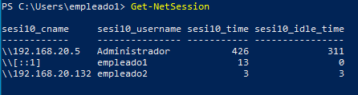
Si la versión es un versión antigua es necesario recordar que podemos realizar la enumeración remota SAM sin necesitar privilegios.
Para poder apuntar al dominio necesitamos configurar el DNS de la maquina linux:
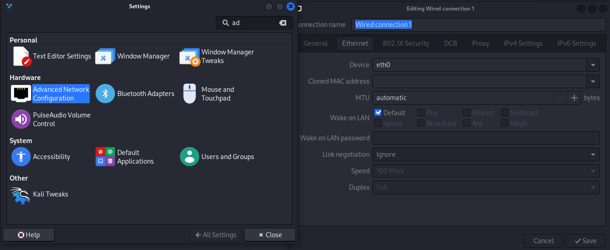
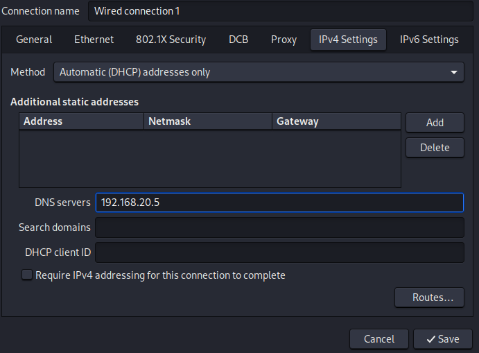
Configuramos que el método solo asigne nuestra IP de forma automática e indicamos la ip del dominio y como vemos ahora si podemos apuntar al dominio
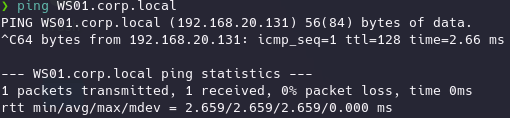
Para poder averiguar que IP corresponde a un controlador de dominio simplemente podemos hacer uso de un reconocimiento con NMAP y en función de los servicios y puertos que la maquina tenga activos podemos deducir rápidamente de que máquina se trata.
sudo nmap -sS -n 192.168.20.0-7
Como vemos esto nos da bastante información:
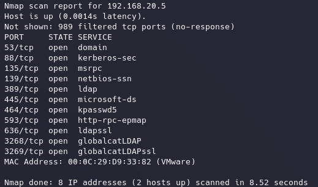
Siendo puertos 88 y 389 de los mas reconocibles en un controlador de dominio.
Para poder enumerar SAM de forma remota en Kali vamos a usar rpcclient, una herramienta clásica que implementa los protocolos que usa windows para comunicarse con sus servicios DCE/RPC.
rpcclient -U "corp\empleado1%Passw0rd1" WS01.corp.local
Si pulsamos TAB dos veces vemos todas las funciones disponibles.
por ejemplo:
enumprivs
Enumera los privilegios del usuario loggeado, pero si intentamos de nuevo enumerar la SAM de forma remota aunque sea desde kali veremos que:
enumdomusers
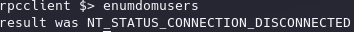
Devuelve un error que básicamente es el mismo motivo que antes y se trata de igual manera que a partir de Windows 10 1607 y WinServer2016 es necesario ser usuario con privilegios para poder hacer una enumeracion remota de SAM aunque sea desde linux.
Es un conjunto de scripts en python que implementan muchos de los protocolos que utiliza windows y además proporciona ejemplos.
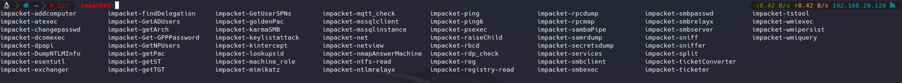
imapacket-samrdump corp/empleado1:Passw0rd1@WS01.corp.local
Si de igual forma ejecutamos un dump de SAM con un usuario sin privilegios seguiremos sin tener acceso.
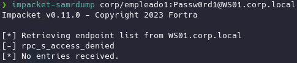
Otra función de impacket interesante es:
impacket-netview corp.local/empleado1:'Passw0rd1' -target WS01.corp.local
Esto se quedará escuchando sesiones de red que se establezcan a este equipo pero de nuevo necesitaremos privilegios de administración para detectar las conexiones.